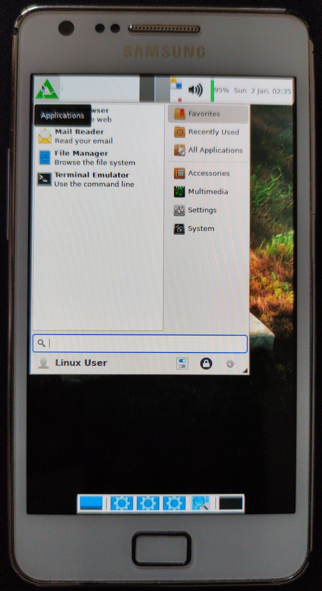

Samsung Galaxy S II (samsung-i9100g)
Jump to navigation
Jump to search
|
 Samsung Galaxy S II (GT-I9100G) running Xfce4 | |
| Manufacturer | Samsung |
|---|---|
| Name | Galaxy S II (GT-I9100G) |
| Codename | samsung-i9100g |
| Released | 2011 |
| Category | testing |
| Original software | TouchWiz UI v4.0 (Android 2.3.4) |
| postmarketOS kernel | 3.0.101 |
| Hardware | |
| Chipset | TI OMAP 4430 |
| CPU | Dual-core 1.2 GHz Cortex-A9 |
| GPU | PowerVR SGX540 |
| Display | 480x800 AMOLED |
| Storage | 16 GB |
| Memory | 1 GB |
| Architecture | armv7 |
| Unixbench Whet/Dhry score | 517.2 |
{kind=link}
| USB Networking |
Works
|
|---|---|
| Flashing |
Works
|
| Touchscreen |
Works
|
| Display |
Works
|
| WiFi |
Partial
|
| FDE |
Works
|
| Mainline |
Partial
|
| Battery |
Partial
|
| 3D Acceleration | |
| Audio |
Broken
|
| Bluetooth |
Broken
|
| Camera |
Broken
|
| GPS |
Broken
|
| Mobile data |
Broken
|
| SMS |
Broken
|
| Calls |
Broken
|
| USB OTG |
Works
|
| NFC |
Unavailable
|
| Accelerometer | |
|---|---|
| Magnetometer | |
| Ambient Light | |
| Proximity | |
| Hall Effect | |
| Ir TX |
Unavailable
|
|---|---|
| TrustZone | |
|
This device is based on TI OMAP 4430. See the SoC page for common tips, guides and troubleshooting steps |
Contributors
Users owning this device
- Ungeskriptet (Notes: mainline is booting. i can sleep peacefully now.)
How to enter flash mode
- Download mode: While the device is off hold Power, Volume Down and Home button to boot it into download mode, afterwards confirm the operation by pressing Volume Up.
- Recovery mode: While the device is off hold Power, Volume Up and Home button to boot it into recovery mode.
Installation
Follow the installation guide.
WiFi
NetworkManager doesn't work on this phone, so to get Wi-Fi working you must use wpa_supplicant only.
Mainline status
| Component | Model | Status | Notes |
|---|---|---|---|
| MicroUSB | - | Y | USB 2.0 |
| eMMC | Sandisk SEM16G | Y | 16 GB |
| microSD | - | Y | |
| Charging | Maxim MAX17040 | N | |
| PMIC | Texas Instrumemts TWL6030 | N | |
| MUIC | Fairchild FSA9480 | N | |
| Volume/Power/Home keys | - | Y | GPIO |
| Touchscreen | Atmel MXT224 | Y | |
| Touchkeys | (Cypress?) Touchkey | N | |
| Accelerometer | Kionix KXTF9 | Y | |
| Gyroscope | TDK InvenSense MPU3050 | N | |
| Magnetometer | AKM (Asahi Kasei Microdevices) AK8975 | N | |
| Light and proximity sensor | Capella Microsystems CM3663 | N | |
| Display | Samsung LD9040 AMOLED panel | N | Driver available in mainline, the same as GT-I9100 |
| Audio | Texas Instruments TWL 6040 | N | |
| GPU | PowerVR SGX 540 | N | PowerVR SGX 540 needs out-of-tree kernel module, patched mesa, and some proprietary blobs |
| Wi-Fi | Broadcom BCM4330 | Y | Wi-Fi connected to mmc5 with SDIO and powered with 2V fixed regulator |
| Bluetooth | Broadcom BCM4330 | N | Bluetooth connected to UART2 |
| Front camera | Samsung S5K5BAF | N | OMAP4 devices have Ducati firmware for cameras |
| Main camera | Samsung S5K3H2 | N | OMAP4 devices have Ducati firmware for cameras |
| HDMI/MHL | Silicon Image sii9234 | N | Driver available in mainline |
| Modem | Intel XMM6260 | N |
GPIO map
| Pin | Function | Direction | Mux | Number |
|---|---|---|---|---|
| gpio-0 | ear_jack_detect | in | hi | 0 |
| gpio-1 | fsa9840_external_id | in | hi | 1 |
| gpio-2 | CP_RST | out | hi | 2 |
| gpio-3 | gpio_kp_in | in | lo | 3 |
| gpio-4 | sysfs | in | lo | 4 |
| gpio-5 | sysfs | in | lo | 5 |
| gpio-6 | SYS_DRM_MSEC | out | hi | 6 |
| gpio-7 | sysfs | in | lo | 7 |
| gpio-8 | gpio_kp_in | in | hi | 8 |
| gpio-9 | sysfs | in | lo | 9 |
| gpio-10 | sysfs | in | hi | 10 |
| gpio-11 | CHG_ING_N | in | lo | 11 |
| gpio-12 | TA_nCONNECTED | in | lo | 12 |
| gpio-13 | CHG_EN | out | lo | 13 |
| gpio-14 | sysfs | in | lo | 14 |
| gpio-15 | sysfs | in | lo | 15 |
| gpio-16 | sysfs | in | lo | 16 |
| gpio-17 | sysfs | in | lo | 17 |
| gpio-18 | sysfs | in | lo | 18 |
| gpio-19 | sysfs | in | lo | 19 |
| gpio-20 | sysfs | in | lo | 20 |
| gpio-21 | sysfs | in | lo | 21 |
| gpio-22 | sysfs | in | lo | 22 |
| gpio-23 | sysfs | in | lo | 23 |
| gpio-24 | sysfs | in | lo | 24 |
| gpio-25 | sysfs | in | lo | 25 |
| gpio-26 | sysfs | in | lo | 26 |
| gpio-27 | sysfs | in | lo | 27 |
| gpio-28 | sysfs | in | lo | 28 |
| gpio-29 | BAT_REMOVAL | in | hi | 29 |
| gpio-30 | gpio_kp_in | in | hi | 30 |
| gpio-31 | gpio_kp_in | in | hi | 31 |
| Pin | Function | Direction | Mux | Number |
|---|---|---|---|---|
| gpio-32 | 3_TOUCH_INT | in | hi | 0 |
| gpio-33 | cm3663_irq | in | hi | 1 |
| gpio-34 | CP_USB_ON | out | lo | 2 |
| gpio-35 | MLCD_RST | in | hi | 3 |
| gpio-36 | CP_ON | out | lo | 4 |
| gpio-37 | PS_ON | out | hi | 5 |
| gpio-38 | sysfs | in | hi | 6 |
| gpio-39 | sysfs | in | lo | 7 |
| gpio-40 | FM_INT | in | hi | 8 |
| gpio-41 | sysfs | in | lo | 9 |
| gpio-42 | FM_RST | out | lo | 10 |
| gpio-43 | sysfs | in | lo | 11 |
| gpio-44 | sysfs | in | hi | 12 |
| gpio-45 | GYRO_INT | in | lo | 13 |
| gpio-46 | TOUCH_nINT | in | hi | 14 |
| gpio-47 | UART_SEL | out | lo | 15 |
| gpio-48 | MICBIAS_EN | out | lo | 16 |
| gpio-49 | EAR_MICBIAS_EN | out | lo | 17 |
| gpio-50 | RESET_REQ_N | out | hi | 18 |
| gpio-51 | sysfs | in | lo | 19 |
| gpio-52 | sysfs | in | lo | 20 |
| gpio-53 | SENSOR_EN | out | hi | 21 |
| gpio-54 | TOUCH_EN | out | hi | 22 |
| gpio-55 | sysfs | in | lo | 23 |
| gpio-56 | CP_DUMP_INT | in | lo | 24 |
| gpio-57 | sysfs | in | lo | 25 |
| gpio-58 | sysfs | in | lo | 26 |
| gpio-59 | MHL_SEL | out | lo | 27 |
| gpio-60 | MHL_RST | out | lo | 28 |
| gpio-61 | scl | in | hi | 29 |
| gpio-62 | sda | in | hi | 30 |
| gpio-63 | HDMI_HPD | in | hi | 31 |
| Pin | Function | Direction | Mux | Number |
|---|---|---|---|---|
| gpio-64 | sysfs | in | lo | 0 |
| gpio-65 | sysfs | in | lo | 1 |
| gpio-66 | sysfs | in | lo | 2 |
| gpio-67 | sysfs | in | lo | 3 |
| gpio-68 | sysfs | in | lo | 4 |
| gpio-69 | sysfs | in | lo | 5 |
| gpio-70 | sysfs | in | lo | 6 |
| gpio-71 | sysfs | in | lo | 7 |
| gpio-72 | sysfs | in | lo | 8 |
| gpio-73 | HW_REV3 | in | hi | 9 |
| gpio-74 | HW_REV2 | in | lo | 10 |
| gpio-75 | HW_REV1 | in | hi | 11 |
| gpio-76 | HW_REV0 | in | lo | 12 |
| gpio-77 | sysfs | in | lo | 13 |
| gpio-78 | sysfs | in | lo | 14 |
| gpio-79 | sysfs | in | lo | 15 |
| gpio-80 | sysfs | in | lo | 16 |
| gpio-81 | WLAN_HOST_WAKE | in | lo | 17 |
| gpio-82 | BT_nRST | out | lo | 18 |
| gpio-83 | BT_HOST_WAKE | in | lo | 19 |
| gpio-84 | sysfs | in | lo | 20 |
| gpio-85 | sysfs | in | lo | 21 |
| gpio-86 | sysfs | in | lo | 22 |
| gpio-87 | sysfs | in | lo | 23 |
| gpio-88 | sysfs | in | lo | 24 |
| gpio-89 | sysfs | in | lo | 25 |
| gpio-90 | sysfs | in | lo | 26 |
| gpio-91 | sysfs | in | lo | 27 |
| gpio-92 | sysfs | in | lo | 28 |
| gpio-93 | BT_WAKE | out | lo | 29 |
| gpio-94 | sysfs | in | lo | 30 |
| gpio-95 | MOTOR_EN | out | lo | 31 |
| Pin | Function | Direction | Mux | Number |
|---|---|---|---|---|
| gpio-96 | sysfs | in | lo | 0 |
| gpio-97 | sysfs | in | lo | 1 |
| gpio-98 | sda | in | hi | 2 |
| gpio-99 | scl | in | hi | 3 |
| gpio-100 | HDMI_EN | out | low | 4 |
| gpio-101 | 3_TOUCH_EN | out | hi | 5 |
| gpio-102 | 3_TOUCH_LED_EN | out | hi | 6 |
| gpio-103 | BT_EN | out | low | 7 |
| gpio-104 | vwl1271 | out | hi | 8 |
| gpio-105 | sysfs | in | lo | 9 |
| gpio-106 | sysfs | in | lo | 10 |
| gpio-107 | sysfs | in | lo | 11 |
| gpio-108 | sysfs | in | lo | 12 |
| gpio-109 | sysfs | in | lo | 13 |
| gpio-110 | sysfs | in | lo | 14 |
| gpio-111 | sysfs | in | lo | 15 |
| gpio-112 | sysfs | in | lo | 16 |
| gpio-113 | sysfs | in | lo | 17 |
| gpio-114 | sysfs | in | lo | 18 |
| gpio-115 | sysfs | in | lo | 19 |
| gpio-116 | sysfs | in | lo | 20 |
| gpio-117 | sysfs | in | lo | 21 |
| gpio-118 | sysfs | in | lo | 22 |
| gpio-119 | PDA_ACTIVE | out | hi | 23 |
| gpio-120 | PHONE_ACTIVE | in | hi | 24 |
| gpio-121 | sysfs | in | hi | 25 |
| gpio-122 | sysfs | in | lo | 26 |
| gpio-123 | sysfs | in | lo | 27 |
| gpio-124 | sysfs | in | lo | 28 |
| gpio-125 | sysfs | in | lo | 29 |
| gpio-126 | sysfs | in | lo | 30 |
| gpio-127 | audpwron | out | lo | 31 |
| Pin | Function | Direction | Mux | Number |
|---|---|---|---|---|
| gpio-128 | sysfs | in | lo | 0 |
| gpio-129 | sysfs | in | lo | 1 |
| gpio-130 | sysfs | in | lo | 2 |
| gpio-131 | sysfs | in | lo | 3 |
| gpio-132 | sysfs | in | lo | 4 |
| gpio-133 | sysfs | in | lo | 5 |
| gpio-134 | sysfs | in | lo | 6 |
| gpio-135 | sysfs | in | lo | 7 |
| gpio-136 | sysfs | in | lo | 8 |
| gpio-137 | sysfs | in | lo | 9 |
| gpio-138 | sysfs | in | lo | 10 |
| gpio-139 | scl | in | hi | 11 |
| gpio-140 | sda | in | hi | 12 |
| gpio-141 | sysfs | in | lo | 13 |
| gpio-142 | sysfs | in | hi | 14 |
| gpio-143 | sysfs | in | lo | 15 |
| gpio-144 | sysfs | in | lo | 16 |
| gpio-145 | sysfs | in | lo | 17 |
| gpio-146 | sysfs | in | lo | 18 |
| gpio-147 | sysfs | in | lo | 19 |
| gpio-148 | sysfs | in | lo | 20 |
| gpio-149 | sysfs | in | lo | 21 |
| gpio-150 | sysfs | in | lo | 22 |
| gpio-151 | LCD_SCLK | in | lo | 23 |
| gpio-152 | LCD_SDI | in | lo | 24 |
| gpio-153 | sysfs | in | lo | 25 |
| gpio-154 | LCD_nCS | in | lo | 26 |
| gpio-155 | sysfs | in | lo | 27 |
| gpio-156 | sysfs | in | lo | 28 |
| gpio-157 | sysfs | in | lo | 29 |
| gpio-158 | sysfs | in | lo | 30 |
| gpio-159 | sysfs | in | lo | 31 |
| Pin | Function | Direction | Mux | Number |
|---|---|---|---|---|
| gpio-160 | sysfs | in | lo | 0 |
| gpio-161 | sysfs | in | lo | 1 |
| gpio-162 | sysfs | in | lo | 2 |
| gpio-163 | sysfs | in | lo | 3 |
| gpio-164 | sysfs | in | lo | 4 |
| gpio-165 | sysfs | in | lo | 5 |
| gpio-166 | sysfs | in | lo | 6 |
| gpio-167 | sysfs | in | lo | 7 |
| gpio-168 | sysfs | in | lo | 8 |
| gpio-169 | host_notifier | in | hi | 9 |
| gpio-170 | sysfs | in | lo | 10 |
| gpio-171 | USB_OTG_EN | out | lo | 11 |
| gpio-172 | AP_AGPS_TSYNC | out | lo | 12 |
| gpio-173 | GPS_PWR_EN | out | lo | 13 |
| gpio-174 | sysfs | in | lo | 14 |
| gpio-175 | MHL_INT | in | lo | 15 |
| gpio-176 | sysfs | in | lo | 16 |
| gpio-177 | SUB_MICBIAS_EN | out | lo | 17 |
| gpio-178 | GPS_nRST | out | hi | 18 |
JTAG
Pin 10 is TX and pin 12 is RX.
{kind=link}
Note: The phone won't output much through UART, all it outputs is this:
Texas Instruments X-Loader 1.41 (Jan 25 2013 - 22:48:41) Uboot-loading from Emmc Starting OS Bootloader from EMMC ... AST_POWERON BOOTING COMPLETED
See also
- Mainline kernel fork
- Kernel sources by LineageOS
- Replicant's i9100G wiki
- Seems to have a free software first stage bootloader. Booting worked on stock jelly bean after compiling this x-loader code and flashing it onto the device with odin.
- The modem seems to be the XMM6260
- Accessing UART